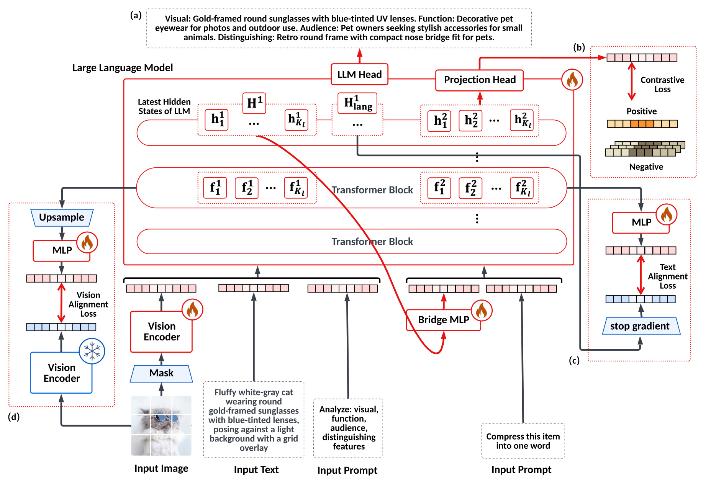
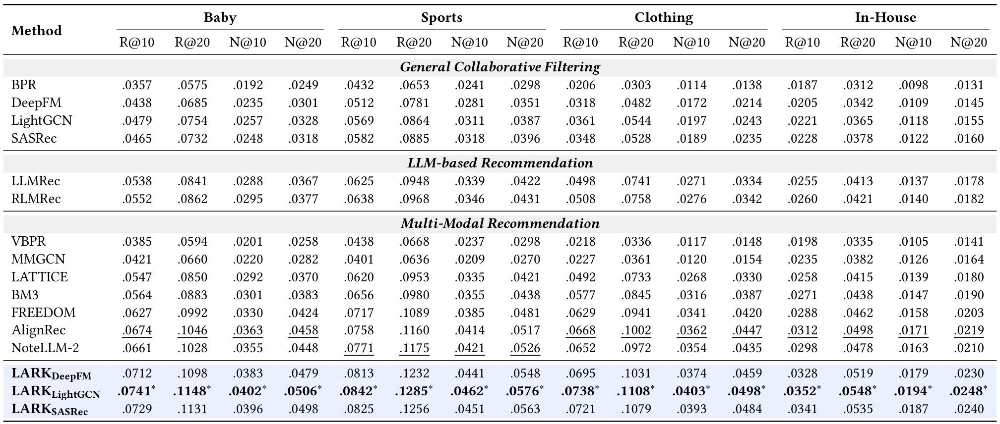
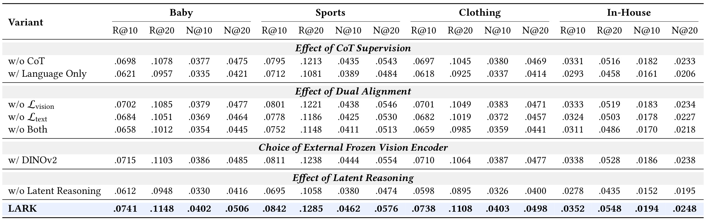
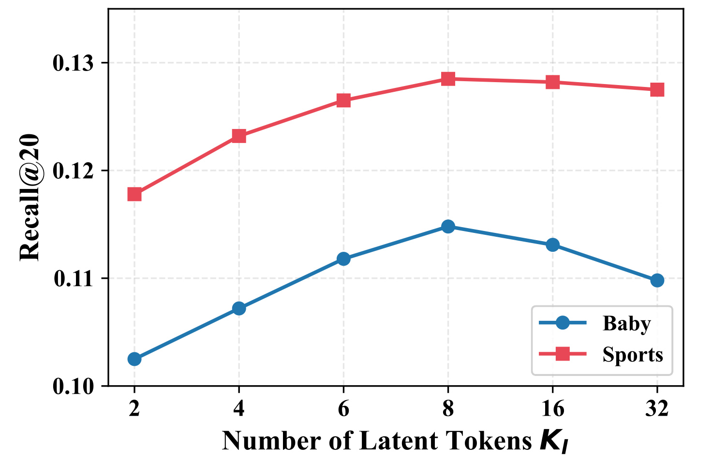
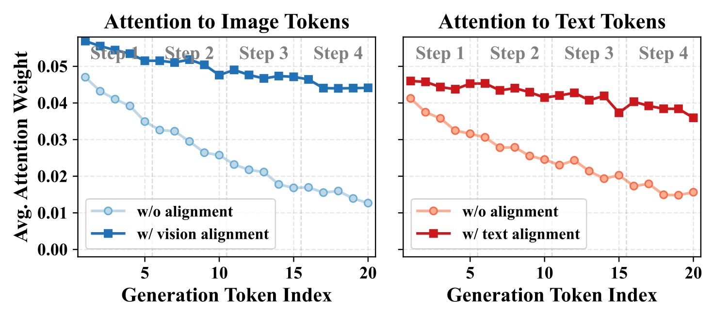
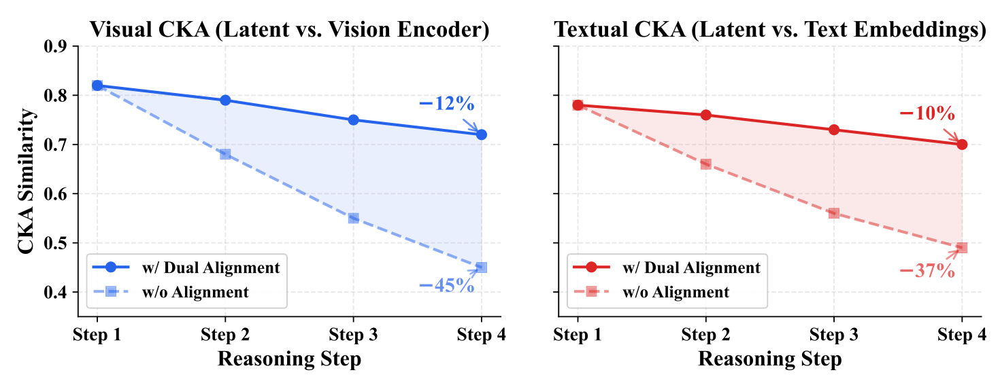
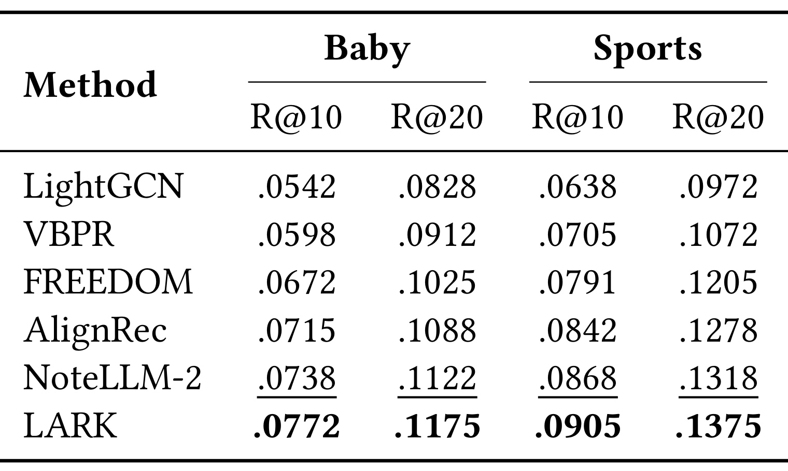
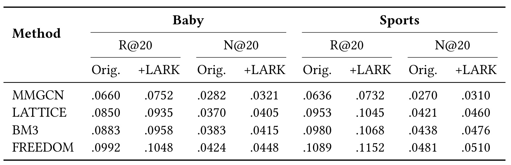
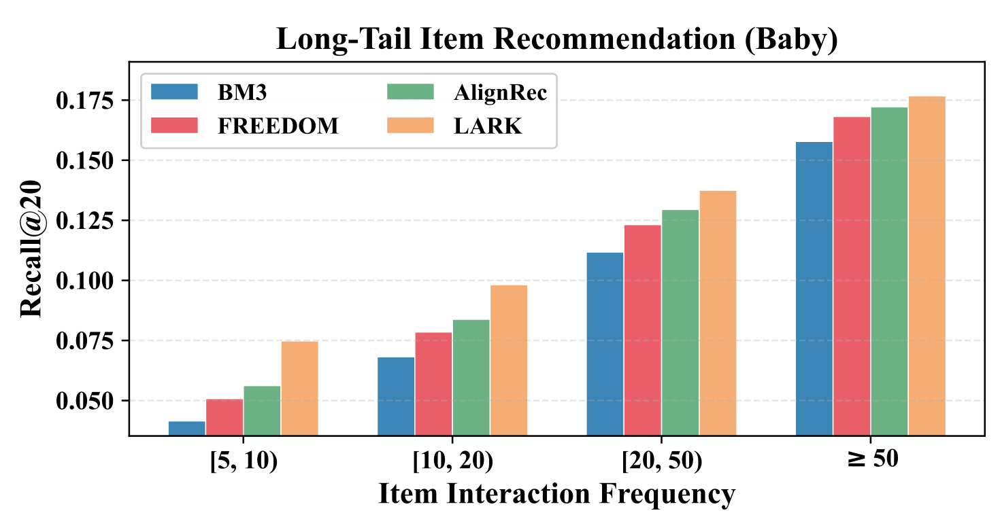

LARK：用双重对齐保住多模态推理中的物品信息
论文：Latent-Aligned Reasoning for Multimodal Recommendation。作者为小红书的 Jiarui Jin 与南京大学的 Anyang Ji，后者在小红书实习期间完成工作。主类别为推荐算法，标签为多模态物品表征、潜空间推理、协同对齐。论文于 2026 年 9 月 4 日发布 v1，本笔记于 2026 年 9 月 8 日核验。论文入口。代码状态：作者仅承诺正式发表时公开，本轮未核验到独立代码入口。首页残留的 2017 年会议模板不能作为发表年份或正式录用证据。
在多步推理中，视觉与文本信号会随表征传播逐渐衰减，使最终用于推荐的稠密向量难以保留两种模态的信息。
1. 背景和问题
多模态推荐通常把图像和商品标题分别编码，再把向量交给协同过滤、图模型或者序列模型。这样的分工容易部署，却不保证两种模态已经发生充分交互。例如同一张衣服图片的颜色与质地、标题里的季节与用途，只有共同解释才可能分清用户真正感兴趣的属性。分别提取图像与文本特征，最后进行拼接，并不会自动得到“适合通勤的轻薄外套”这样的组合语义。视觉语言模型提供统一理解的能力，因此论文选择改造物品编码器，而没有要求每次请求都让大模型阅读整段用户历史。
这里的目标也不同于视觉问答。视觉问答最终要输出一句答案，推荐则需要一条可以反复检索、与用户向量比较、供下游模型训练的稠密表示。生成一句看起来合理的物品描述，并不意味着其隐藏状态已经成为好的推荐特征。描述可能强调视觉显著但对偏好无关的细节，也可能把高度相似的商品压成相同词汇。最终表征必须既保留内容差别，又与用户行为中的物品相关性相容。这使“理解图片”“生成分析”和“学习可排序向量”成为三个相关却不能直接等同的目标。
作者把多步推理中的信息衰减称为跨模态稀释。随着模型不断产生后续位置，早期图片和文本的影响可能逐渐减弱；最终用来表示物品的向量，因而更接近模型自己刚生成的内容，而离最初的模态证据更远。论文并不把这个问题限定为图片遗忘，也关注文本语义的衰减。对推荐而言，忽略一处材料、适用对象或功能限定就可能把物品放进错误的近邻群。更长的推理链因而不是天然收益，必须检查链末端实际留下了什么信息。
这种动机值得研究，但要区分三个观察层次。注意力权重下降，是模型计算过程中的关联现象；隐藏表示与输入特征的相似性下降，是表征几何的变化；推荐指标下降，才是下游任务的结果。三者方向一致可以构成相互支持的证据，却不能把某一层的曲线直接当成另两层的证明。尤其注意力权重受上下文长度和归一化分母影响，表示相似度也不等于信息完整性。本文把后续注意力与中心化核对齐分析作为机制线索，与消融和排序结果分别讨论。
潜空间推理提供了另一条信息通路：不把每一个中间状态强行解码成词，而把连续隐藏状态直接送回下一位置。离散词表只有有限候选，像材质纹理、细小外观差异以及混合语义，未必能被短句完整表达；连续向量保留更多可调整的自由度。不过只加入潜变量并不能保证信息有用，模型可能形成与视觉细节无关、只适合训练目标的捷径。潜变量如何被约束、从哪里获得可靠监督，正是比“用了连续思考”更关键的设计问题。
LARK 没有把语言推理彻底删除，而是把潜变量组与文字分析交错排列。每个阶段先经过一组连续隐藏状态，再生成一句可解释的分析，四个阶段依次描述视觉属性、功能、目标人群和区别性特征。这样，潜变量能够利用前面已经形成的文字理解，文字监督也能帮助潜变量学习有意义的方向。其设计依据是两种中间表达互补，而不是把语言视作完全无用的瓶颈。因此，把这篇工作概括成“纯潜空间、完全不用思维链”会误读实际执行路径。
两重对齐分别解决不同位置的约束缺口。第一阶段使用冻结视觉编码器的图块特征作为外部参照，让潜变量在多步分析中定期保持与图像的联系。第二阶段要把这些潜变量转成物品向量，此时模型受到协同行为监督；若只优化相邻物品靠近，可能进一步丢掉前面推理形成的细致语义。作者于是将第二阶段中间特征对齐到第一阶段语言位置的隐藏状态。这个目标是模型自己的推理表示，不是另一个文本模型输出的静态标题向量。
协同关系仍是整个方法的重要条件。训练不是只凭一张图和一段标题做无监督压缩，而是从历史交互里挖出物品共现邻居，利用这些邻居训练向量空间。内容理解帮助模型在行为稀疏时形成更好的表示，行为信号则告诉模型哪些内容差异更有推荐意义。因而论文结果不能直接外推到完全没有交互数据的新领域，也不能把其收益归因于视觉语言模型预训练知识一项。教师生成的分析、协同邻居、双重对齐和下游推荐器共同构成了结果。
工程上，论文采取离线编码、线上消费向量的分工。物品内容变化频率低于请求频率时，先计算好表示能够避免每次请求运行视觉语言模型；已有推荐模型也可以继续独立更新用户表示。代价被移到了训练、离线内容处理、特征存储和版本刷新链路。若商品库存频繁更新，或者热点内容只能存活很短时间，离线编码吞吐与刷新延迟就会直接决定实际价值。本文后续谈及“线上无额外推理延迟”时，仅指服务请求没有新增大模型调用。
研究边界也需要从一开始固定。本文的数据结果来自三组公开电商子集和一个平台内部离线数据集，作者计划的在线实验尚属未来工作。公开数据名称在引言与实验引用中存在版本口径差异，主表还混合引用历史论文数值与自行复现结果，这些都会影响精确复现。最适合从本文带走的是一套待验证的物品编码设计：用模态参照约束推理过程，再用协同目标决定最终向量方向；真实线上收益、生产成本和完全冷启动能力仍需要额外证据。
2. 方法
2.1 交错潜变量与视觉语言推理
第一阶段输入由可见图块向量、标题文本和分析提示拼接组成。训练时随机遮挡一半图块，主路径视觉编码器可训练，作为对齐目标的副本冻结，两者不能混淆。设初始上下文为图像向量集合、文字向量集合和提示向量的串接，潜变量位置直接回填上一位置隐藏状态，语言位置则在训练时输入教师答案对应的词嵌入。原文式三至六可以合并写为：
符号解释：物品索引为 i，V、W、P 分别是图块、文本和提示向量；S 是已经形成的上下文，h 是最后位置隐藏状态，e 是下一位置输入；两种位置集合由固定模板决定，教师词为 c 的星号版本。每组有四个潜变量位置，一共有四组，因此连续位置总数为十六。语言位置仍受因果掩码控制，后面的潜变量能看到前面的图像、标题以及已生成的分析，而不能访问未来分析。训练采用教师强制输入，离线推理时则自行生成语言词，这也带来通常的训练与生成分布差异。

Figure 1 的左下角是完整图像的冻结视觉分支，中间是经过遮挡的主输入，右侧是第二阶段的物品对比训练。左侧损失并不直接要求最终物品向量重建整幅图像，而是约束第一阶段潜变量的中间层表征。中间层位于总层数约三分之二处，潜变量数量与视觉图块数量不同，因此先上采样，再经过可学习投影，形成可逐图块比较的向量。顶部可见语言输出及其监督，表明文字链真实参与过程。右侧的停止梯度标记只位于语言目标支路，不能解释为整个第一阶段被冻结。框架图同时画出两阶段对同一语言骨干的使用，桥接模块负责把第一阶段最后层的隐藏空间转换成第二阶段输入空间；这与简单串联两个互不相关模型有本质区别。图中宠物配饰的功能和人群分析是原始示例，不能把模型生成的语义当成经过人工验证的商品事实。因此图内各类箭头的方向应与正文损失定义一起核对。
视觉对齐采用负余弦相似度。它为遮挡后的主路径提供完整图像的特征参照，但参照仍是预训练视觉编码器的表示，并非人工商品属性标签。目标分支冻结可以避免参照与主模型共同漂移，却不能保证参照空间本身保留了所有推荐所需信息。对齐发生在潜变量中间层，最终物品向量还受到后续骨干和协同目标影响，原文式七为：
这里，F 的上标一是第一阶段中间层潜变量特征，帽号表示经上采样和投影后的结果，N 的下标 p 是原图图块数量，冻结编码器给出的第 j 个图块目标为 f 的下标 phi,j。最小化负相似度意味着提高两者方向一致性，而不是逐像素复原。第一阶段最后层还分别收集潜变量位置隐藏状态和语言位置隐藏状态，前者传给第二阶段，后者成为推理语义参照；用于对齐的中间层与跨阶段传递的最后层应在实现中明确区分。
2.2 物品对齐与推理语义保留
最后层隐藏状态不能直接假定与骨干第一层输入嵌入分布相同。桥接多层感知机先做空间转换，再添加第二阶段提示，原文式八至九为：
其中 H 是第一阶段全部潜变量位置的最后层隐藏状态，波浪号是桥接输出，E 的上标二是第二阶段输入，P 的上标二要求模型形成紧凑物品表示。输入本身是连续向量，因此无需先转成字符串再分词。骨干处理后，通过均值池化和投影头得到固定维数物品向量，供相似度和下游模型使用。
第二阶段的推理文本对齐目标来自第一阶段所有语言位置隐藏状态的均值。四步文字分析的词数可以不同，这种平均方式按位置汇总，没有显示地给每个语义步骤相同权重，较长的描述可能贡献更多位置。它约束的是推理过程形成的连续语义，不能用标题平均词向量直接替代而声称实现等价。原文式十为：
横线 r 表示推理语言的平均隐藏表示，K 的下标 l 是潜变量总数，f 的上标二取第二阶段约三分之二层的特征，sg 是停止梯度算子。停止梯度仅禁止这项损失经目标均值反传；第二阶段输入仍由第一阶段潜变量产生，梯度可以经过桥接模块回传。所有潜变量位置对齐同一均值可能压缩位置差异，作者认为因果上下文和物品区分目标会维持多样性，但这不是一个严格的防坍塌定理。均值也可能抹掉四步分析之间的结构差别，后续可以用分步目标作为对照。
协同正样本由 Swing 从训练交互中挖掘。其相似度对共同用户对求和，以两用户历史交集大小作抑制，避免高度重复的共现贡献过重：
共同交互过两物品的用户集合为 U 的下标 ij，用户历史物品集合为 I，平滑常数 alpha 取一。每个物品保留十个最高分邻居，从中抽正样本 j；批内其他物品参与分母，B 是批大小，tau 为零点零七。物品向量 e 来自第二阶段池化投影。该目标把内容推理连接到行为关系，也意味着邻居挖掘质量、热门物品偏差以及批内假负样本都会影响最终空间，不能把损失简单解释为纯内容语义相似性。
2.3 联合训练与离线物品编码
教师模型离线为每个物品生成四步分析，每步一句、少于十五个英文单词。训练时语言位置采用交叉熵，与视觉对齐、推理文本对齐及物品对比损失共同优化，原文式十三至十四为：
条件上下文为 E 的小于 t 部分，两项权重都取零点一。四项目标联合端到端训练；阶段是前向流程的两个组成部分，不应理解成先把阶段一永久训练冻结再独立训练阶段二。附录算法提供逐物品生成与收集流程，但其视觉对齐伪代码直接使用最后层收集值，而正文规定中间层特征，复现时还需要确认真实实现采用哪一层。
编码完成后物品向量冻结，下游根据用户历史学习表示。论文给出的排序目标为：
其中 e 的下标 u 是用户向量，i 是正物品，j 是未交互物品，三元组集合为 O，sigma 是逻辑函数。原文式一和十五描述同类成对排序目标。离线编码时仍完整运行潜变量与语言交错流程，再执行第二阶段；线上只取冻结向量。消融段一句“推理可绕过语言头”与方法正文及附录 Algorithm 2 不一致，因此不能据此删掉实际生成路径，也不能把未提供的简化版本当成已测效率结果。
3. 实验结果
3.1 数据设置与主结果
三个公开子集分别为 Baby、Sports、Clothing，用户数为 19,445、35,598、39,387，物品数为 7,050、18,357、23,033，交互数为 139,110、296,337、278,677。内部数据有 856,214 个用户、432,671 个物品和 12,384,529 次交互，密度约 0.003%。公开子集采用五核过滤。每个用户按时间把最后一次交互留作测试、倒数第二次作验证，其余训练；Swing 邻居只从训练交互构造。评价采用全量排序，报告前十和前二十的召回与归一化折损累计增益，五个随机种子取平均。
骨干为 Qwen2.5-VL-3B，教师为 Gemini-2.5-Flash，优化器 AdamW，学习率万分之一并采用余弦退火。附录教师链平均长度在四数据集依次为 53.2、56.8、54.1、55.4 个词元，最大长度为 72、75、70、74。缺失四步结构时重新生成，涉及不足 1.2% 物品；同句链在不同物品间重复会被标记，比例不足 0.3%。这些检查主要约束格式，并没有给出完整的语义真实性人工审核结果。引言称 Amazon Reviews 2023，实验却引用另一版历史数据来源，复现必须核对具体下载版本与过滤脚本。

Table 2 显示，接入 LightGCN 的 LARK 在 Baby、Sports、Clothing、内部数据上的 Recall@20 分别为 0.1148、0.1285、0.1108、0.0548。对应 AlignRec 为 0.1046、0.1160、0.1002、0.0498；内部数据绝对增加 0.0050，即指标按百分数表示时增加 0.50 个百分点，相对增幅约 10.0%，不能写成增加十个百分点。Sports 的较强基线是 NoteLLM-2，数值为 0.1175，因此相对它的提升约 9.36%。三个下游版本中 LightGCN 最高，但 DeepFM 和 SASRec 版本也能利用同一类离线表示，这比只在单个下游结构上提高更能说明特征的可迁移性。表中星号代表作者报告的配对检验显著性，阈值为零点零五；部分基线数字来自已有论文，其余采用官方实现复现，不能假定所有方法经历完全一致的数据重建与调参预算。较小三十亿骨干胜过七十亿 NoteLLM-2 是此设置中的效果比较，不是已测得的端到端算力性价比结论。另外，不同下游模型的排序数值受用户聚合能力影响，不能把整张表中的差值都算成物品编码器的净贡献。最有针对性的比较应固定下游架构、输入信息和训练切分，再单独改变特征生成策略，并同时保留强内容编码基线。
3.2 消融与超参数

Table 3 以 Baby 的完整结果 0.1148 为基准，删除思维链监督降到 0.1078，相对下降约 6.1%；删除视觉对齐为 0.1085，下降约 5.5%；删除推理文本对齐为 0.1051，下降约 8.4%；两种对齐都删掉为 0.1012，下降约 11.8%。这些差值支持各项约束有贡献，但各损失并非独立相加，不能把几个下降百分比直接相加估计总贡献。将冻结视觉目标换成 DINOv2 后为 0.1103，比不做视觉对齐好，又低于使用自身视觉编码器副本的版本，说明外部视觉知识的强弱并非唯一因素，目标空间兼容性也重要。只用语言的位置替代潜变量得到 0.0957，相对完整结果实际下降约 16.6%，与正文所写的 9.5% 不一致，本笔记以表内数值重新计算。删除全部潜变量和文字监督、直接池化骨干隐藏态为 0.0948，下降约 17.4%。该对照说明完整训练设计超出单纯换大骨干的收益，但仍没有完全分离生成长度与训练算量因素。表内对照是在相同下游模型中删除组件，优于跨架构比较，但删除目标后最适合的学习率或权重未必不变，因此仍需检查各变体的独立调参预算。
损失权重实验只在 Baby 和 Sports 展示，两个权重在零点一附近较好，过大时辅助目标可能挤压物品区分目标。遮挡率实验比较零、四分之一、二分之一、四分之三，论文选择二分之一；不遮挡和遮挡过多都会退化。曲线和柱图没有完整置信区间，本笔记不根据柱高补造精确数值，也不把默认参数看作所有领域的通用最优设置。潜变量长度还存在更直接的图文矛盾，需要保留原图核对。

Figure 6 的原图横轴清楚标注二、四、六、八、十六、三十二，两条曲线在八附近达到较高位置，之后 Baby 下降、Sports 也有轻微回落。正文却写扫描四、八、十二、十六、二十四、三十二，并据此描述十六以后趋于平台、三十二只有边际收益。由于横轴含义决定“同样计算量获得多少效果”的解释，这不是可以忽略的排版细节。本文保留作者在实现设置明确写出的四组乘每组四个潜变量作为默认方案，但不把图上横轴擅自重标成正文列表，也不声称图已经证明十六是最佳点。复现需要取得实际扫描配置、各点对应的生成长度及运行时间，才能判断收益来自连续步骤数量还是不同的文字链配置。作者关于三十二使第一阶段计算翻倍的陈述，也没有配套硬件吞吐测量；包含固定输入和文字生成时，潜变量倍增与总编码耗时倍增不能自动画等号。扫描配置公开前，任何关于最优长度的精确结论都应保持待核验。
3.3 注意力与表征漂移

Figure 3 取 Baby 数据的中间层，比较当前生成位置对图像和文本位置分配的平均注意力。无对齐曲线随推理明显下降，有对齐版本下降更缓。作者概括图像衰减约从 45% 降到 12%，文本从 38% 降到 9%；图形支持下降趋势缓和，但正文这些百分比与原图可见端点难以一致，可能涉及未说明的聚合口径，本文不将其视为已经由图直接验证的精确数值，也不以目测替代重新计算。曲线本身没有误差带，连续位置的聚合规则仍需核对。这项分析的价值是揭示模型确实改变了访问输入模态的行为，不是只在输出端碰巧改变排序。它的限制是平均权重无法告诉我们保留的是否恰好是对推荐有用的信息：大量关注背景纹理同样可能得到更高视觉注意力。第二阶段文本对齐能经共享骨干和潜变量主路径影响第一阶段，不能因目标支路停止梯度就认为它不可能改变这幅图。相反，要判定这种影响是不是主要收益来源，还需要控制其他损失和训练条件的干预实验。

Figure 8 从 Baby 随机抽取一千个物品，检查四组潜变量隐藏表示与冻结视觉特征、原始文本嵌入的中心化核对齐相似性。没有双重对齐时，视觉相似性由 0.82 下降到 0.45，文本由 0.78 下降到 0.49；加入对齐后，视觉末步约 0.72、文本约 0.70，对应约 12% 和 10% 的相对下降。这里用于分析的文本参照是原始输入词嵌入，训练时第二阶段文本损失的目标却是第一阶段语言推理隐藏态，两者不能写成同一个张量。这种几何分析与注意力观察方向一致，支持“对齐缓解表示偏离输入”的解释，但中心化核对齐不是信息量度，也不是关于因果机制的证明。模型可能保留更多输入变化，同时也保留对排序无用的变化；只有与下游指标、反事实内容修改以及不同难度物品的表现共同看，才能判断所保留内容的任务价值。当前只有一个数据集的一千个抽样物品，跨域稳定性仍未直接验证。复现时还应公开抽样清单、核对齐实现及中间层选择，避免把抽样波动误当成稳定机制。
3.4 物品检索与特征替换

Table 4 把 NoteLLM-2 放回其更擅长的物品检索任务。测试相关物品由留出的测试交互产生，要求物品对至少有五个共同用户；训练 Swing 图来自训练交互，论文声明二者交互来源分开。Baby 上 NoteLLM-2 的 Recall@20 为 0.1122，LARK 为 0.1175，相对提升约 4.72%；Sports 为 0.1318 对 0.1375，相对提升约 4.32%。这比主表某些用户到物品差距更小，说明比较对象的原生任务会影响结论。如果只看把 NoteLLM-2 特征接入 LightGCN 的结果，容易低估它在直接相似物品检索上的优势。该实验支持 LARK 的物品表示并非只适配用户聚合器，但相关性仍由共同行为定义，不能直接推成产品属性专家标注下的语义准确率。测试物品对与训练正样本的交互来源分开，也不等于两边物品实体完全不重叠；严格的新物品泛化还需要单独的物品级隔离实验。共同用户阈值还会偏向已有一定曝光的物品，低频商品可能根本无法进入评价相关集合。因此这个实验不能取代稀疏新品检索评测，也不能证明模型在所有库存覆盖范围上都有同等收益。

Table 5 对四种现有多模态模型替换输入特征，其他组件保持不变。Baby 上 MMGCN 的 Recall@20 从 0.0660 到 0.0752，相对增幅约 13.9%；Sports 从 0.0636 到 0.0732，相对约 15.1%，这是结论中“最高十五点一”的具体来源，不能把它套用到全部数据集和最强基线上。原特征处理较强的 FREEDOM 在 Baby 上从 0.0992 到 0.1048，相对约 5.6%；Sports 从 0.1089 到 0.1152，相对约 5.8%。这种收益随原有表征能力变化的模式，对工程接入很有参考价值：先选择明确存在内容编码短板的通路，更可能辨别离线特征升级的效果。不过更换特征还引入了额外教师标注和训练过程，实验不是相同总成本下仅改变一个无代价输入。正文在这里把 FREEDOM 称为主表最强基线，与表内 AlignRec 的更高数字不一致；评价应回到具体表格与数据集，而不能沿用这句笼统描述。具体落地时还要测量不同旧特征维度与新特征投影方式是否改变模型容量，保持训练轮次与其他输入一致；否则表征质量与容量增加难以完全区分，收益范围也会随接入位置变化。
3.5 长尾分组与证据边界

Figure 7 将物品分成四个频率桶，图中最低桶是五至不足十次交互，然后是十至不足二十、二十至不足五十、至少五十。低频桶里 LARK 相对其他方法的差距较明显，支持内容表征在行为较少时可能更有帮助的观察。但正文把最低组说成少于五次，同时公开数据又采用五核过滤，三处口径无法自动兼容。若频率按训练切分后重新统计，确实可能出现少于五次的物品，但作者没有在图上给出这类桶，不能替作者补出未声明的解释。因此本笔记只讨论原图明确展示的低频分组，不把它称为完全冷启动实验，也不从柱高生成不存在的精确统计。对实际接入而言，真正值得补测的是首次出现、仅有一次曝光、只有内容尚无正交互等人群，以及物品生命周期与内容更新速度。全量平均召回改善可能掩盖极低频样本损失，长尾结论必须依赖严格的切分定义和每组样本量。
整体结果仍是作者离线实验，尚无在线点击、停留、转化、留存或业务护栏指标，也没有完整的物品编码吞吐、训练显存、教师调用成本和索引更新成本。主表显著性与多随机种子增加了可信度，但不能弥补内部数据不可公开、代码尚未核验及图文口径冲突。四数据集覆盖与跨下游模型对照足以使方案值得复现，尚不足以证明可以直接替换生产表征。
4. 总结
LARK 的核心贡献是把推荐物品编码拆成具有不同约束的两段：第一段在连续潜变量和语言分析之间交错推理，用冻结视觉参照保持图像信息；第二段把潜变量投到推荐向量空间，用协同对比目标学习物品关系，同时对齐模型自己生成的推理语义。它提供了内容理解与行为监督之间更细的接口，最有说服力的证据是多数据集主结果、分项消融以及在固定已有模型中替换特征仍获得收益。
对推荐实践，较稳妥的起点是把它当成可版本化的离线物品特征候选，与现有内容特征并行比较，再观察不同下游模型是否确实受益。必须同时保留原始内容版本、教师标注版本、Swing 图时间窗口和下游训练时间，否则特征更新后难以判断改进来自模型本身还是数据新鲜度。离线向量降低请求时的模型调用压力，但不会消除生成成本，也不会自动解决新物品进入索引前的等待时间。
4.1 已知局限
- 结果仍局限于离线排序。 内部数据规模较大不等于已经生产上线，作者明确把在线实验列为未来工作；没有业务指标和更新成本就无法计算实际回报。
- 复现口径存在冲突。 数据版本引用、潜变量扫描横轴、语言模式下降百分比、最低频率桶，以及推理是否仍生成语言都需要澄清；应保留表图原始数值，不用流畅叙述掩盖矛盾。
- 教师分析可能带入内容误判。 格式检查只能保证四步齐全，目标人群、功能和差异化描述仍可能依据外观猜测；错误文字目标会通过联合训练影响向量空间。
- 机制证据不能替代因果验证。 注意力与中心化核对齐只提供代理信号，均值文本目标也可能压缩细粒度语义；当前没有证明对齐保留的都是任务相关信息。
- 协同邻居与基线可比性仍有限。 方法依赖训练行为产生正样本，不能直接宣称完全冷启动有效；混合引用历史基线数据也需要在统一数据和算量下重新评估。
4.2 后续跟进
- 取得代码后优先核验中间层采集、桥接主路径梯度、语言目标停止梯度与离线生成分支，逐项对照正文和附录，明确真实默认长度与扫描配置。
- 在同一数据切分和相同总训练预算下比较静态视觉语言特征、纯语言、纯潜变量与交错版本，补充逐物品编码耗时、吞吐、显存、教师成本和增量刷新时延。
- 建立物品级时间隔离与零交互切片，独立统计新品、低频、内容缺失和标题图像冲突样本；对教师描述错误进行人工抽检，检查对齐是否放大错误语义。
- 若离线收益稳定，再开展带业务护栏的线上实验，同时监测点击质量、内容多样性和更新滞后，并比较直接特征替换与重新训练下游两种接入方式。
这些补测可以把“更好的多模态推理”落到可核验的推荐收益上。当前最值得保留的判断是双重参照为离线物品表示提供了有效候选设计；实际收益范围、成本与冷启动外推仍须由更严格的实验决定。